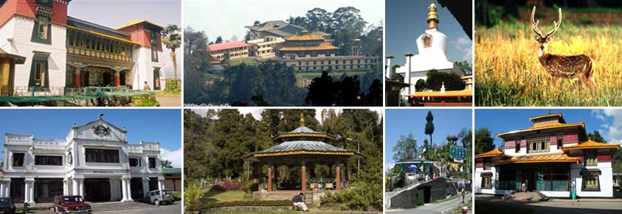

Sikkim is a state in northeast India, bordered by Bhutan, Tibet and Nepal.
Part of the Himalayas, the area has a dramatic landscape that includes
India’s highest mountain, 8,586m Kangchenjunga. Sikkim is also home to
glaciers, alpine meadows and thousands of varieties of wildflowers. Steep
paths lead to hilltop Buddhist monasteries such as Pemayangtse, which
dates to the early 1700s.
Capital: Gangtok
Population: 6.19 lakhs (2012)
Chief minister: Prem Singh Tamang

Climate
Sikkim's climate ranges from sub-tropical in the south to tundra in the north.
Most of the inhabited regions of Sikkim experience a temperate climate, with
temperatures seldom exceeding 28 °C (82 °F) in summer. The average annual
temperature for most of Sikkim is around 18 °C (64 °F).
Best time to visit
The best time to visit Sikkim is between March and November,
as the weather is very pleasant. The summer season starts in March and ends by June.
How can you reach Sikkim?
You can reach Sikkim through airway by taking a flight to Bagdogra Airport in West Bengal.
Though there is no major railway station in the state, you can also resort on railway to
reach Sikkim by taking
a train to Siliguri or Jalpaiguri. Furthermore, you can also hit the road to reach Sikkim.